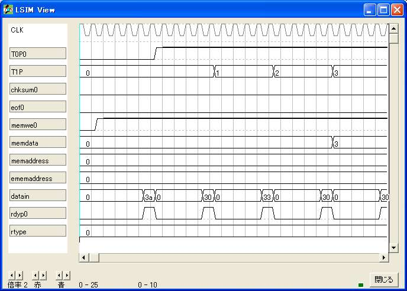
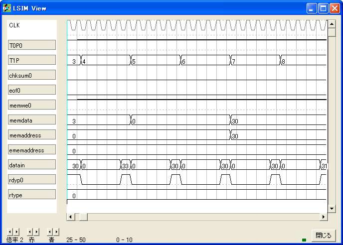
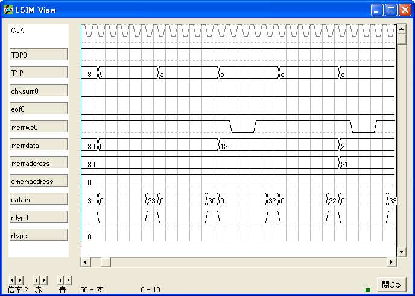
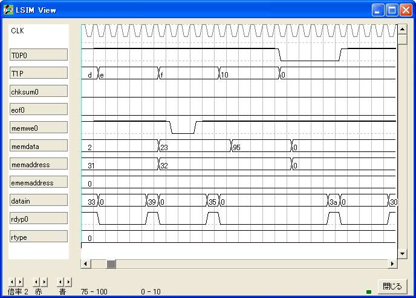
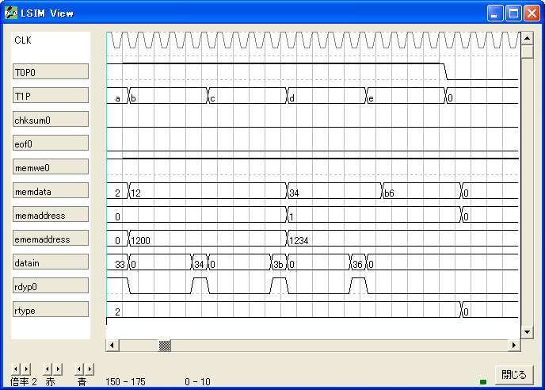
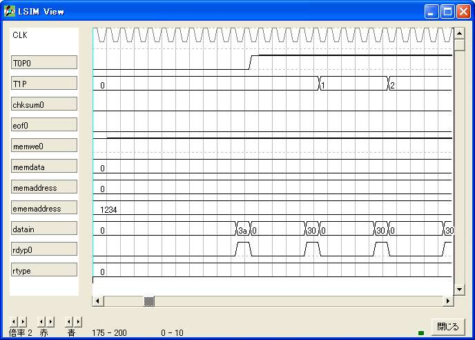
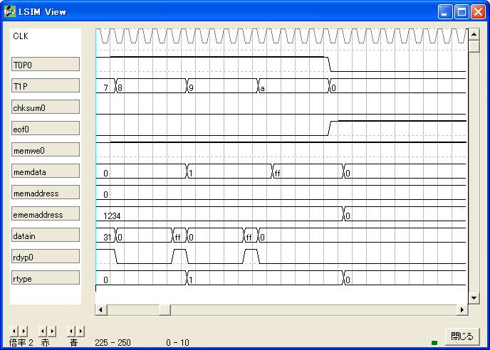

{ ========================================================= }
{ インテルHEXファイル メモリ書き込み }
{ ========================================================= }
logicname sample
{ ========================================================= }
{ 実効譜 }
{ ========================================================= }
entity main
input rdyp; { データパルス }
input datain[8]; { データ }
output ememaddress[16]; { 拡張メモリ番地 }
output memaddress[16]; { メモリ番地 }
output memdata[8]; { メモリデータ }
output memwe; { メモリ書き込み }
output rtype[8]; { フレームタイプ }
output eof; { ファイル終了 }
output chksum; { チェックサム結果 }
output T0P;
output T1P[9];
bitr fs; { フレーム(レコード)開始 }
bitr fc[9]; { 文字計数 }
bitr dc[8]; { データ計数 }
bitr tmp4r[8]; { 上位4桁 }
bitr tmp5r[8]; { 下位4桁 }
bitr eaddress[16]; { 拡張番地 }
bitr address[16]; { 番地 }
bitr we[3]; { 書き込み }
bitr sum[8]; { チェックサム }
bitr type[8]; { タイプ }
bitr data[8]; { データ }
bitr eop[5]; { フレーム終了 }
bitr regeof; { 仮ファイル終了 }
bitr regchksum; { 仮チェックサム結果 }
{ --------------------------------------------------------- }
{ フレームの開始検知と文字の計数 }
{ --------------------------------------------------------- }
if (!eop.4)
if (!fs)
if (rdyp)
if (datain==0x3A)
fs=1;
endif
endif
else
fs=fs;
if (rdyp)
fc=fc+1;
else
fc=fc;
endif
endif
endif
{ --------------------------------------------------------- }
{ データ数の取得と減数 }
{ --------------------------------------------------------- }
if (fs)
if ((fc==3)&rdyp)
dc.0:3=tmp5r.0:3;
dc.4:7=tmp4r.0:3;
else
if (fc>11)
if (rdyp&!fc.0)
if (dc!=0)
dc=dc-1;
endif
else
dc=dc;
endif
else
dc=dc;
endif
endif
else
dc=0xFF;
endif
{ --------------------------------------------------------- }
{ 番地の取得と増数 }
{ --------------------------------------------------------- }
if (fs)
switch(fc)
case 4:
if (rdyp)
address.8:11 =tmp5r.0:3;
address.12:15=tmp4r.0:3;
else
address.8:15=address.8:15;
endif
case 6:
if (rdyp)
address.0:3=tmp5r.0:3;
address.4:7=tmp4r.0:3;
else
address.0:7=address.0:7;
endif
default:
if (fc>10)
if (rdyp&!fc.0)
address=address+1;
else
address=address;
endif
else
address=address;
endif
endswitch
endif
memaddress=address;
{ --------------------------------------------------------- }
{ 拡張番地の取得 }
{ --------------------------------------------------------- }
if (!regeof)
if (type==2)
switch(fc)
case 10:
if (rdyp)
eaddress.8:11 =tmp5r.0:3;
eaddress.12:15=tmp4r.0:3;
else
eaddress.8:15=eaddress.8:15;
endif
case 12:
if (rdyp)
eaddress.0:3=tmp5r.0:3;
eaddress.4:7=tmp4r.0:3;
else
eaddress.0:7=eaddress.0:7;
endif
eaddress.8:15=eaddress.8:15;
default:
eaddress=eaddress;
endswitch
else
eaddress=eaddress;
endif
endif
ememaddress=eaddress;
{ --------------------------------------------------------- }
{ 文字から4桁の数値に変換して記憶 上位 }
{ --------------------------------------------------------- }
if (fs)
if (rdyp&!fc.0)
if ((datain>0x40)&(datain<0x47))
tmp4r=datain-55;
else
if ((datain>0x60)&(datain<0x67))
tmp4r=datain-87;
else
tmp4r=datain-0x30;
endif
endif
else
tmp4r=tmp4r;
endif
endif
{ --------------------------------------------------------- }
{ 文字から4桁の数値に変換して記憶 下位 }
{ --------------------------------------------------------- }
if (fs)
if (rdyp&fc.0)
if ((datain>0x40)&(datain<0x47))
tmp5r=datain-55;
else
if ((datain>0x60)&(datain<0x67))
tmp5r=datain-87;
else
tmp5r=datain-0x30;
endif
endif
else
tmp5r=tmp5r;
endif
endif
{ --------------------------------------------------------- }
{ タイプ取得 }
{ --------------------------------------------------------- }
if (fs)
if (fc==8)
if (rdyp&!fc.0)
type.0:3=tmp5r.0:3;
type.4:7=tmp4r.0:3;
else
type=type;
endif
else
type=type;
endif
endif
rtype=type;
{ --------------------------------------------------------- }
{ 8桁データ }
{ --------------------------------------------------------- }
if (fs)
if (fc>=0)
if ((rdyp&!fc.0)|eop.0)
data.0:3=tmp5r.0:3;
data.4:7=tmp4r.0:3;
else
data=data;
endif
else
data=data;
endif
endif
memdata=data;
{ --------------------------------------------------------- }
{ 書き込みパルス作成 }
{ --------------------------------------------------------- }
if (fs)
if (fc>9)
if (rdyp&!fc.0)
if (type==0)
we=1;
endif
else
switch(we)
case 0b001: we=0b100;
case 0b100: we=0b101;
endswitch
endif
endif
endif
memwe=!we.2;
{ --------------------------------------------------------- }
{ チェックサム用の足し算とチェックサム }
{ --------------------------------------------------------- }
if (fs)
if ((rdyp&fc.0)|eop.1)
sum=sum+data;
else
sum=sum;
endif
endif
if (eop.2)
if (sum!=0)
regchksum=1;
else
regchksum=regchksum;
endif
else
regchksum=regchksum;
endif
chksum=regchksum;
{ --------------------------------------------------------- }
{ フレーム終了処理のパルス }
{ --------------------------------------------------------- }
if (fs)
if (type==1)
if (rdyp)
eop=1;
endif
else
if ((dc==1)&rdyp)
eop=1;
endif
endif
endif
if (fs)
switch(eop)
case 1: eop=2;
case 2: eop=4;
case 4: eop=8;
case 8: eop=16;
case 16: eop=eop;
endswitch
endif
{ --------------------------------------------------------- }
{ ファイル終了処理のパルス }
{ --------------------------------------------------------- }
if ((type==1)&eop.4)
regeof=1;
else
regeof=regeof;
endif
eof=regeof;
{ --------------------------------------------------------- }
{ テストポイント }
{ --------------------------------------------------------- }
T0P=fs;
T1P=fc;
ende
{ ========================================================= }
{ 機能実効譜 }
{ ========================================================= }
entity sim
output rdyp;
output datain[8];
output ememaddress[16];
output memaddress[16];
output memdata[8];
output memwe;
output rtype[8];
output eof;
output chksum;
output T0P;
output T1P[9];
bitr tc[8];
part main(rdyp,datain,ememaddress,memaddress,memdata,memwe,rtype,eof,chksum,T0P,T1P)
tc=tc+1;
{ :0300300013022395 }
{ :0200021234B6 }
{ :00000001FF }
switch(tc)
case 5: rdyp=1; datain=0x3a;
case 10: rdyp=1; datain=0x30; {データ個数}
case 15: rdyp=1; datain=0x33;
case 20: rdyp=1; datain=0x30; { 番地 }
case 25: rdyp=1; datain=0x30;
case 30: rdyp=1; datain=0x33;
case 35: rdyp=1; datain=0x30;
case 40: rdyp=1; datain=0x30; { タイプ }
case 45: rdyp=1; datain=0x30;
case 50: rdyp=1; datain=0x31; { no.1 }
case 55: rdyp=1; datain=0x33;
case 60: rdyp=1; datain=0x30; { no.2 }
case 65: rdyp=1; datain=0x32;
case 70: rdyp=1; datain=0x32; { no.3 }
case 75: rdyp=1; datain=0x33;
case 80: rdyp=1; datain=0x39; { チェックサム }
case 85: rdyp=1; datain=0x35;
case 95 : rdyp=1; datain=0x3A;
case 100: rdyp=1; datain=0x30; {データ個数}
case 105: rdyp=1; datain=0x32;
case 110: rdyp=1; datain=0x30; { 番地 }
case 115: rdyp=1; datain=0x30;
case 120: rdyp=1; datain=0x30;
case 125: rdyp=1; datain=0x30;
case 130: rdyp=1; datain=0x30; { タイプ }
case 135: rdyp=1; datain=0x32;
case 140: rdyp=1; datain=0x31; { no.1 }
case 145: rdyp=1; datain=0x32;
case 150: rdyp=1; datain=0x33; { no.2 }
case 155: rdyp=1; datain=0x34;
case 160: rdyp=1; datain=0x3B; { チェックサム }
case 165: rdyp=1; datain=0x36;
case 185: rdyp=1; datain=0x3a;
case 190: rdyp=1; datain=0x30; {データ個数}
case 195: rdyp=1; datain=0x30;
case 200: rdyp=1; datain=0x30; { 番地 }
case 205: rdyp=1; datain=0x30;
case 210: rdyp=1; datain=0x30;
case 215: rdyp=1; datain=0x30;
case 220: rdyp=1; datain=0x30; { タイプ }
case 225: rdyp=1; datain=0x31;
case 230: rdyp=1; datain=0xff;
case 235: rdyp=1; datain=0xff;
endswitch
ende
endlogic






